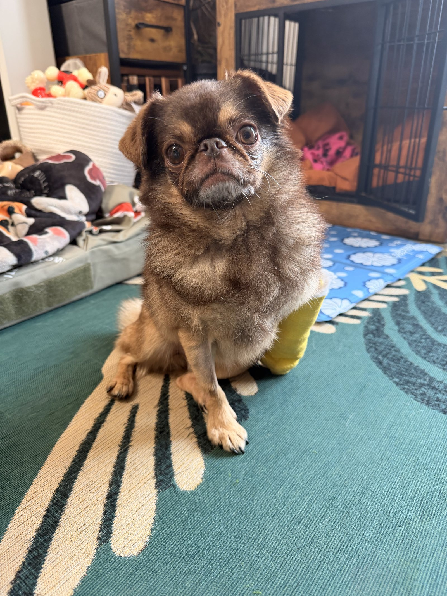

About the project
Chilli had an audience. Most animals do not.
Waiting Room Stories began with Ollie Cutts, Chilli’s illness and a question that did not go away.

The emergency that started this.
Chilli needed extensive specialist treatment for a life-threatening neurological illness. Skilled veterinary professionals cared for him, and his community’s generosity helped make that treatment possible.
GoFundMe provided the fundraising platform. The people who donated, shared his story and supported the family made an extraordinary difference.
Ollie could reach millions of people through KingChilliThePug. Most owners facing a comparable emergency have no audience like that.
The main purpose: better access to care.
Waiting Room Stories collects experiences of financial barriers to emergency and specialist veterinary treatment. It will use those experiences alongside independent research to develop practical reform proposals, starting in the UK.
The questions concern costs, payment timing, insurance, referrals and communication. Veterinary professionals helped save Chilli; their experience and the real costs of delivering care belong in this work.
A separate ambition: animals without an audience.
In time, we want to help genuine emergency fundraisers reach people who might support them. That needs verification, partners, separate consent and clear arrangements for handling money.
It is a future ambition. Waiting Room Stories is not a registered charity, an emergency grant provider, a direct veterinary payment service or an operational fundraising intermediary.
Who is responsible?
The project is led by Ollie Cutts, the creator behind KingChilliThePug. Questions from contributors, journalists, researchers and organisations can go directly to the project’s contact route.